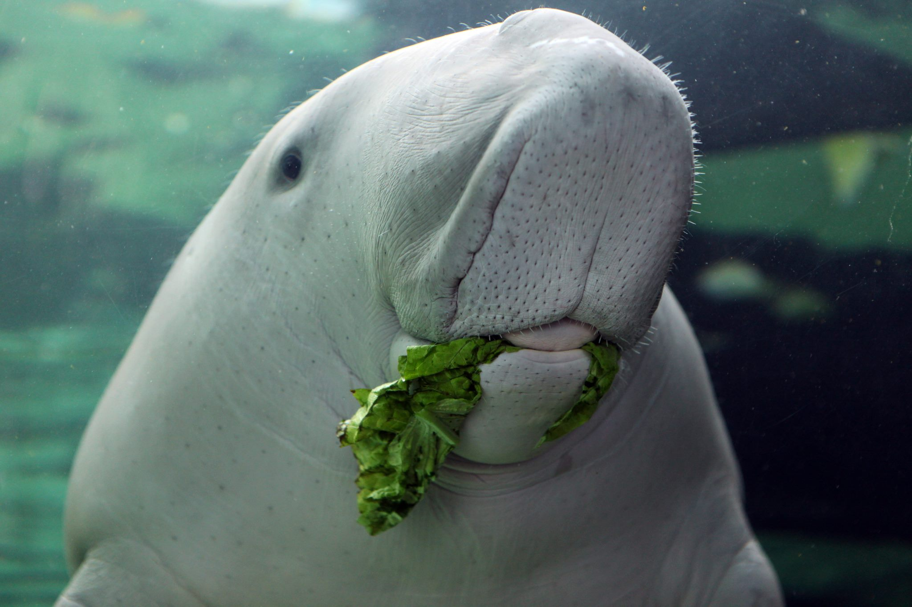

a dugong eating salad, 2008
a dugong eating salad, 2008
Dugongs are endangered and quickly disappearing due to hunting, boat strikes and pollution. If you're moved by the information and photos you find here please sign our petitions and spread the word.